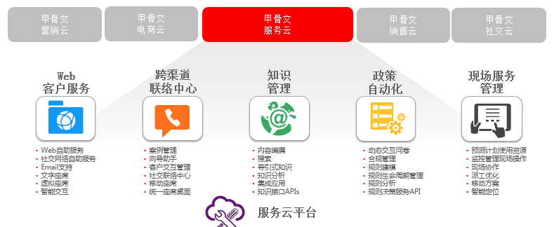
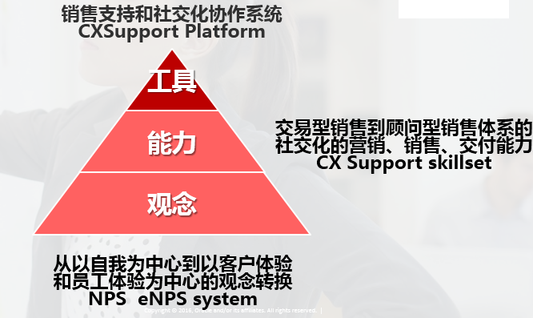
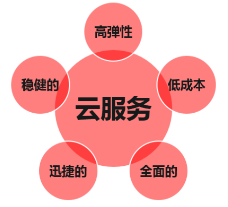

Oracle 数据库公有云
甲骨文服务云最完整的服务解决方案

产品简介
利用 Oracle 数据库公有云服务，您可以选择专用数据库实例且拥有完全管控权， 从而在云中实现 Oracle 数据库的灵活性和强大功能。数据库即服务提供的专用 虚拟机包含完全配置且不间断运行的 Oracle 数据库实例。Oracle 数据库公有 云服务能使企业获得云的所有益处，包括以预付费订购的方式，访问可靠、可伸 缩且安全的云环境。
功能介绍
见效快、选择多、损失小
-
Oracle 数据库公有云服务旨在最大限度地提高工作效率。借助 Oracle 数据库云，企 业可以即时访问以业界最佳数据库平台为基础构建的云环境，随时在其中进行应用程 序开发和部署。Oracle 数据库云提供的自助服务工具使开发工作和数据库管理工作更 加便捷。此外，Oracle 数据库云还为用户提供了多种数据库管理选项，既可以由用户 自行管理（用户拥有完全管控权），也可以完全由 Oracle 管理。利用 Oracle 数据库 云，成效立竿见影，选择灵活多样，而整体性能仍维持较高水平。
数据库即服务
-
数据库即服务提供的专用虚拟机包含预配置且不间断运行的 Oracle Database 12c 或 11g 实例。而数据库即服务提供的通用型大内存计算模型可将 Oracle 数据库的全部 功能提供给任何类型的应用程序，无论部署生产负载还是部署开发与测试。企业可以 在多个版本中进行选择包括标准版、企业版（不含数据库选件）、企业高性能版（包 含大部分数据库选件）、企业极致性能版（包含所有数据库选件）。企业若想在云中 使用功能齐备的 Oracle 数据库，同时还拥有完全管控权（如对操作系统 root 和 数据 库 SYSDBA 的访问权），则数据库即服务是理想之选。数据库即服务提供的高级云工 具可简化数据库管理，包括一键式自动备份及按时间点恢复、一键式补丁升级，以及 一键式升级。数据库即服 务 还支持广泛的连接和访问 方 式，包括通过 SSH 、 SQL*Net、JDBC、Web、HTTPS 和其他驱动程序，访问典型管理任务和网络的一整 套 CLI （ 命 令 行 界 面 ） 。 同 时 ， 它 也 支 持 Oracle Application Express 、 SQL Developer、 Data Pump、SQL*Plus 等开发和管理工具。数据库即服务包括：可以 快速轻松地创建新数据库实例的供应向导、用以备份和恢复数据库实例及相关配置和 系统文件的高级云工具、用于数据库自动修补的实用程序、 提供 Oracle 数据库的有 关信息并对数据库进行各种控制的本地监视应用程序。
适用于任何业务的企业级云的价格
-
作为 Oracle 云的一部分，Oracle 数据库公有云服务部署在包括通用 x86 计算资源或 Oracle Exadata 的企业级基础架构中，以提供：卓越的性能和可用性、用于数据冗余 的三重存储镜像、完整的系统备份和恢复、位于多个地理位置的数据中心，以及物理 和逻辑安全性。此外，Oracle 云具有全天候、多语种支持，以确保不同地区的客户 需求均能得到满足。总之，Oracle 数据库公有云服务已将您的需求悉数囊括在内。

实施实验型战略需要以下特性

产品特性
-
具备 Oracle 数据库的全部功能，包括SQL 和 PL/SQL 支持。
-
专用的虚拟机（附带预配置的数据库 实例或专用 Schema）。
-
管理选项灵活多样，即可自行管理，也可完全由 Oracle 管理。
-
用户信息库和一次性登录 ( SSO ) 的集成式身份管理。
-
Oracle Database 12c 和 11g，包括标准版、企业版、企业高性能版、企业极致性能版选件包。
-
ORACLE APPLICATION EXPRESS (APEX)。